01中国科大造出 0.9 纳米碳纳米带，验证三十年前预言
10 月 28 日晚 11 点，中国科学技术大学的一项成果在线发表于《自然》。
一句话说清。他们做出了 1996 年理论预言的那种碳结构，并测得它像金属一样导电。
这种结构宽约 0.9 纳米。作为参照，一根头发丝的直径大约是它的八万倍。
电子在这条不到一纳米宽的通道里跑，电导接近一个电导量子，提拉长度增加到约 4 纳米时基本不变。
这组数字说明的是同一件事，电子在里面几乎不散射。
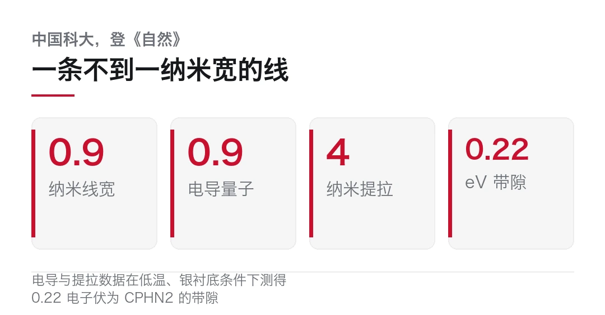
- 中国科大王兵、范其瑭团队制备出仅由五元环和七元环构成的碳纳米带，成果 10 月 28 日在线发表于《自然》。
- 1996 年有理论预言这类「五七环」结构可能像金属一样导电，被称为「共价金属」，三十年来未获实验验证。
- 团队用分步表面合成，经过连链、重排、侧向融合三步得到目标结构。
- 两种纳米带 CPHN1 与 CPHN2 环组成相同、排列不同，前者是金属，后者是带宽约 0.22 电子伏的半导体。
- 有望作为原子尺度导线与互连单元，用于未来的碳基芯片。
一个三十年前的说法
先讲清楚这个预言特别在哪儿。麻烦在于，它反的是直觉。
金刚石和石墨都是纯碳，一个透明绝缘，一个黑而导电。差别不在原子，在原子怎么连。
石墨烯是六元环拼成的蜂窝网。那么把六元环换成五元环和七元环呢？
1996 年，有理论学家算了一遍，说这种结构可能像金属一样导电。等一下，这听起来不稀奇。问题在于另一件事，这些碳原子之间是共价键，靠共享电子连在一起，而金属导电靠的是自由电子海。
共价键连出来的东西，却表现出金属的电子性质，所以这类材料被叫作「共价金属」。
三十年来，理论摆在那儿，实验做不出来。难在合成。要拿到由成对五元环组成的分子链，中间体活性太高，撑不住。
三步，像拉拉链
中国科大合肥微尺度物质科学国家研究中心单分子团队王兵、范其瑭及合作者，把这条路拆成了三步。
第一步，连成链。他们原本打算用二溴代戊搭烯做起点，但这个单体活性过高，稳定制备不出来。于是换了个起点，用含八元碳环的分子当单体，在银表面把它们连成链。
第二步，重排。加热，让八元环变成一对五元环。这一步拿到了关键的聚戊搭烯链，此前没人稳定拿到过。
第三步，侧向融合。继续升温，相邻的链像拉链一样从侧面咬合，链与链之间形成七元环。
三步走完，得到的就是五七环碳纳米带。
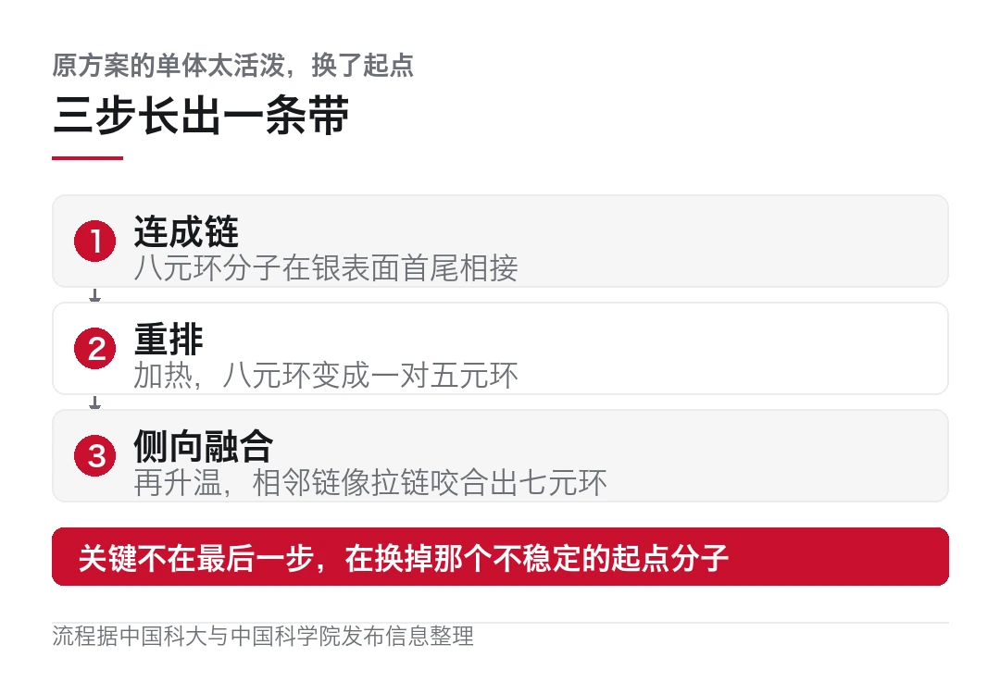
关键不在最后那步，在换起点分子。原方案走不通，不是因为理论错，是因为那个分子太活泼。
高分辨显微成像确认了结果，还发现一个意外。两条链的相对取向不同，会长出 CPHN1 和 CPHN2 两种结构。
同样的环，两种性质
这是全篇最有意思的部分。
CPHN1 和 CPHN2 的环组成完全一样，都是五元环加七元环。区别只在排列方式。
结果一种是金属，另一种是带宽约 0.22 电子伏的窄带隙半导体。
测试方法是这样的。研究人员用扫描隧道显微镜的针尖连接纳米带一端，把它提起来，在针尖与银表面之间搭出一条纳米尺度的电流通路。
通路只有几纳米长，比可见光波长小两个数量级。
低温下测到 CPHN1 的电导最高约为 0.9 个电导量子。电导量子是衡量单个理想电子通道导电能力的基本尺度，0.9 意味着接近理论上限。
更关键的是，提拉长度增加到约 4 纳米，这个数值基本不变。
长度变了电导不变，说明电子在里面没怎么撞到东西。这就是近弹道输运。
CPHN2 那边电导低了约两个数量级，低电压下电流明显被抑制，符合半导体的行为。
团队还从电子的波动性侧面验证了一遍。他们在纳米带与银表面之间插入一层溴原子，减弱衬底干扰，然后测量电子波干涉形成的驻波图样，用准粒子干涉分析还原出能量与波长的关系。结论一致，CPHN1 的能带穿过费米能级，CPHN2 有一个 0.22 电子伏的带隙。
从「改材料」到「设计材料」
注意一点，这段背景解释了这篇为什么值得上主推。
碳基电子学喊了很多年，石墨烯是明星。但它有个致命短板，没有带隙。
带隙是什么？简单说，电子要从「不能导电」跳到「能导电」，中间需要跨过一段能量差。这段能量差就是带隙。晶体管之所以能当开关，就是靠加电压控制电子跨不跨得过去。
石墨烯的导带和价带在一点上相接，中间没有空隙。所以它永远是导体，关不掉。
一个关不掉的开关，做不了逻辑电路。
于是这十几年，业界换了很多办法，说白了都是在给石墨烯补一个缺口。给石墨烯加应力、加电场、做双层扭转、切成纳米带让量子限域撑开带隙。每条路都有人走，各有各的进展，但离可量产都还有距离。
这次的意义在于换了思路。它不再试图「改造」一个没有带隙的材料，而是直接换一种碳的排列方式。
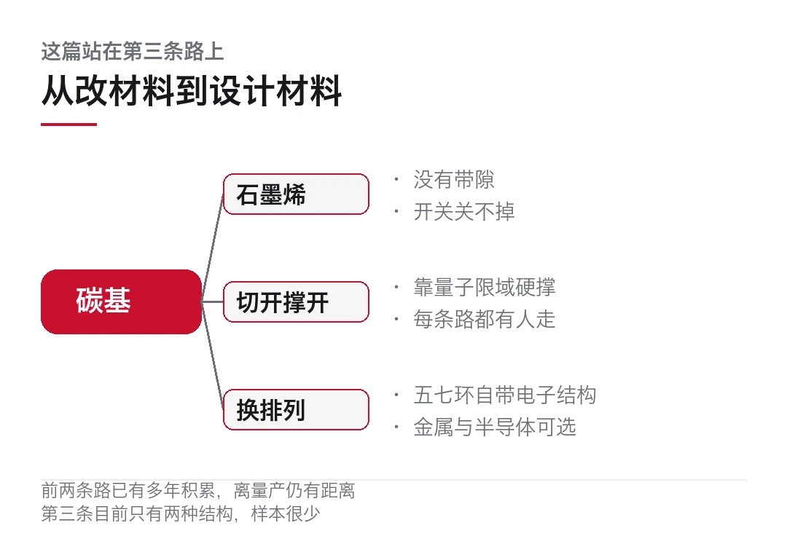
五元环加七元环，本身就带来不同的电子结构。而且同样是五七环，排列一改，金属变半导体。这意味着带隙不是靠外部条件硬撑出来的，而是写在原子怎么连这件事里的。
从「改材料」到「设计材料」，这是两条不同的路。
当然，别急着高兴。这只是两种结构。要从「两种」走到「一张能查的表」，还得做很多组。但方向清楚了。
把两种结构摊开对比，差别就清楚了。
| 项 | CPHN1 | CPHN2 ||---|---|---|| 环组成 | 五元环加七元环 | 五元环加七元环 || 链间取向 | 一种 | 另一种 || 电导 | 约 0.9 个电导量子 | 低约两个数量级 || 能带 | 穿过费米能级 | 约 0.22 电子伏带隙 || 性质 | 金属 | 窄带隙半导体 || 提拉 4 纳米 | 电导基本不变 | 低电压电流受抑制 |
同一张表里，前两行完全一样，后四行全不一样。这就是这篇论文最有信息量的地方。
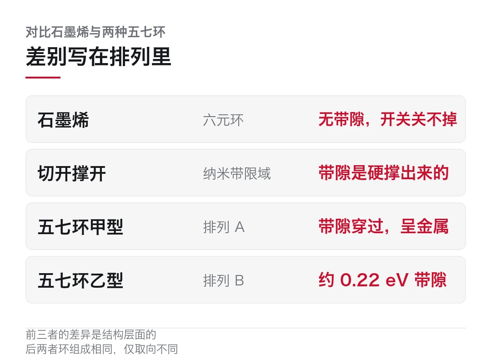
把这两件事接起来看，就落到芯片上了。硅基工艺在往物理极限挤，这是行业共识。所以这些年在找替代材料，碳基是主要方向之一。
但「碳基芯片」这四个字容易被说大。这篇论文没有做出任何器件。
它做的是另一件更基础的事：证明「用设计原子连接方式的办法，可以在亚纳米宽度上控制电子怎么走」。
这句话的分量在于「设计」。石墨烯的问题是没有带隙，做不了开关。而这篇告诉你，同样是碳，只改环的排列，就能从金属变成半导体。
也就是说，碳材料的电子性质，第一次变成了可以画图纸的东西。
至于用途，论文说法是原子尺度的导线和互连单元。芯片里最细的那层连线，一直是微缩的瓶颈之一。如果导线能细到一纳米还保持低散射，那这条路的物理空间就打开了。
冷判断
得把边界说清楚。
第一，这是低温测量。0.9 个电导量子、4 纳米内不变，都是在低温下得到的。室温下能保持多少，论文没给答案。而芯片是要在室温跑的。
第二，是在银衬底上长的。衬底的影响通过溴原子层减弱了，但没有完全消掉。脱离衬底之后这条纳米带还能不能稳定存在、还能不能保持金属性，是另一个问题。
第三，产量。分步表面合成是在银表面一个分子一个分子接起来的，本质是实验室手段。要做到晶圆级，中间隔着的不是一步两步。
所以这条新闻该怎么读？一个三十年的理论问题被实验回答了，一种新的材料体系被建立起来了。 不是「碳基芯片要来了」。
我更关心下一步。CPHN1 和 CPHN2 只差排列，性质差两个数量级，这个对比本身就是个实验平台。如果能系统地把「排列」和「性质」的对应关系摸清，碳基材料的设计就有了规则书。
规则书比样品值钱。
电导「约 0.9 个电导量子」、提拉长度「约 4 纳米基本不变」、CPHN2 带隙「约 0.22 电子伏」等数据均为论文与校方口径，测量条件为低温、银衬底。该研究未做出器件，室温表现与规模化制备均未涉及，不宜外推为碳基芯片的工程进展。
发表时间各方表述略有差异（10 月 28 日晚至 29 日），本文按校方口径写 10 月 28 日。本文仅作事实转述。
本文信息来源
- 中国科学技术大学新闻网 — 中国科大新成果登《自然》，验证近 30 年前的科学预言（2026-10-30） · news.ustc.edu.cn
- 中国科学技术大学新闻网 — 新碳纳米带可高效输运电子（2026-10-30） · news.ustc.edu.cn
- 中国科学院（新华社）— 中国科学家创制新的碳纳米带实现高效电子输运（2026-10-29） · cas.cn
- 中国科学院（科技日报）— 新碳纳米带可高效输运电子（2026-10-30） · cas.cn
- 科学网（中国科学报）— 「戊庚环型」一维碳基共价金属材料研发成功（2026-10-29） · news.sciencenet.cn
- 科学网（科技日报）— 我国学者创制出一维碳基共价金属材料（2026-10-29） · news.sciencenet.cn
- 科技日报 — 我学者创制出一维碳基共价金属材料（2026-10-29） · stdaily.com
- 央广网 — 中国科大创制「戊庚环型」一维碳基共价金属材料（2026-10-29） · cnr.cn
- Nature — 五七环碳纳米带的制备与电子输运性质研究（2026-10-28 在线） · nature.com
02Strata 用 12GB 显存跑 1250 亿参数
10 月 29 日，开源项目 Strata 发布 0.2.8。
它干的事说起来简单，也离谱。让一台 12GB 显存加 32GB 内存的普通游戏 PC，跑起约 1250 亿参数的模型。
按常规，这个规模要数据中心。而它现在只需要一个 MIT 许可的仓库、一次离线安装、一个 localhost 接口。
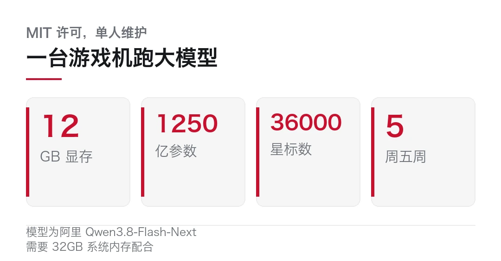
仓库 9 月 24 日创建，五周涨到约 35,000 星，10 月 27 日单日新增 844 星。基本是一个人做的，靠读者请咖啡资助。
- Strata 0.2.8 于 10 月 29 日发布，MIT 许可，仓库为 Niko1221/Strata。
- 可在 12GB 显存加 32GB 内存的机器上跑 Qwen3.8-Flash-Next，约 1250 亿参数。
- 做法是把 24,576 个专家分到显存、内存、CPU 与固态四处，配推测解码。
- 0.2.8 加了双 Intel Arc 提速、四卡 Radeon 高并发，并修掉 Mac 上每次请求漏约 1.3GB 显存的问题。
- 有一个中文用户需要留意的问题，GitHub issue #438 记录中文回答会循环重复。
它把模型拆到哪儿去了
关键在这个模型的结构。Qwen3.8-Flash-Next 有 48 层、24,576 个专家，但每个 token 只激活大约 10 个。
稀疏给了操作空间。你不需要把所有专家同时放进显存。
Strata 的做法是拆成四处。显存只留最常用的那几千个专家；系统内存把全部专家装下；CPU 负责并行计算没在显存里的那些；固态上放一张约 29GB 的 n-gram 查表。
再叠一层推测解码，用模型自带的 MTP 草稿层，官方说法是同一个答案能快 1.6 到 1.8 倍。长提示按最多 8,192 个 token 分块读。
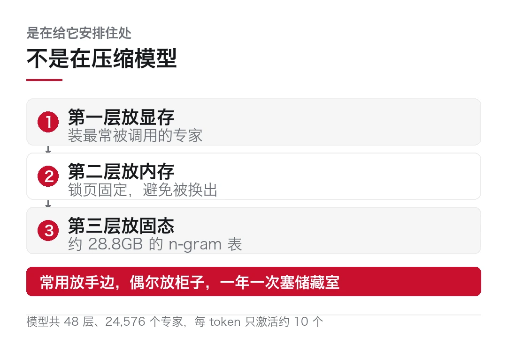
它做的不是压缩模型，是给模型安排住处。
这套安排有一个反直觉的结论。真正决定你能跑多大的，是内存，不是显存。
官方给的对应关系很清楚。32GB 内存跑 Coder 版；48GB 跑 IQ2_XS 或 Q2_0；64GB 推荐 IQ2_XS，也可以上 IQ3_XXS；96GB 以上才轮到 IQ3_S。
四档尺寸按「内存加显存合计」算，从 Q2_0 的 37.6GB 到 IQ3_S 的 54.8GB，下载量在 66 到 76GB 之间，另加约 6GB 的草稿层。
那这算什么？这不是「小显存也能跑大模型」的故事。这是「把显存不够的问题，换成内存和硬盘够不够的问题」。
0.2.8 改了什么
这次更新三块。
一块是双卡 Intel Arc。用两张 Arc Pro B65，解码快 17% 到 23%，对话从 60 至 63 tok/s 升到 71 至 74，JSON 输出到 80 至 83。
边界说得很死。只对正好两张 B 系列成立。单卡、A 系列、三张以上，跑得跟以前一模一样。
另一块是四卡 AMD Radeon。四张 R9700，32 个并发请求下总吞吐从 155 tok/s 到 370。
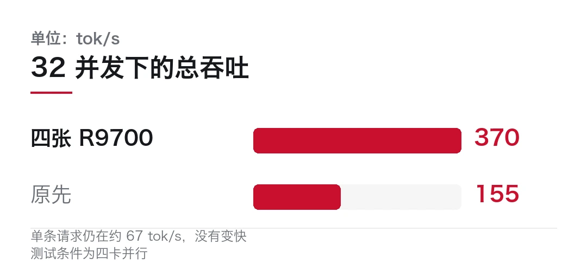
这里有个容易误读的地方。单条请求还是约 67 tok/s，没变快。涨的是并发能力。
买的是能同时服务多少人，不是一个人能多快。
第三块是修 bug，也是这次最实用的一条。在 Mac 上跑 DeepSeek 时，每次请求漏掉约 1.3GB 的 GPU 缓冲。
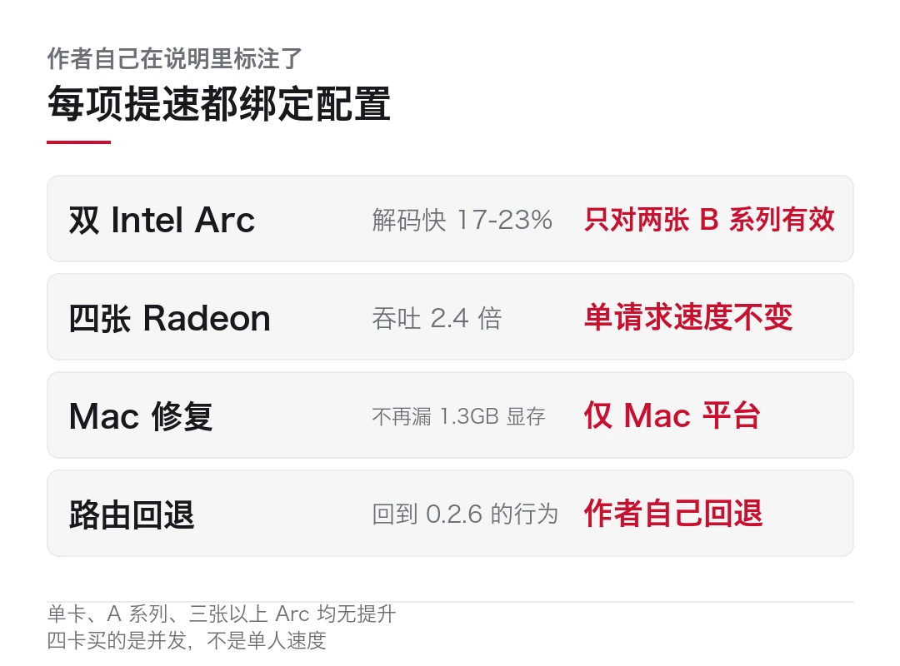
漏得不多，架不住积少成多。跑久了内存填满，解码速度从 16 tok/s 掉到 3 tok/s。现在 34 个请求下来稳定在 76GB，解码维持在 18 至 22。
顺带还有一个数，工具调用的恢复率从 92.9% 提到 98.3%，默认开启。这个只对请求里声明过的工具生效。
它回退了自己上一版的提速
有一条改动，值得单独说。
0.2.7 里，作者做过一个让 12GB 以下 RTX 显卡回答更快的变化。但那个速度有代价，长会话会出现重复文本。
0.2.8 把它撤了。路由逻辑回到 0.2.6 的行为，想要的人可以手动开。
```bash
# 0.2.8 默认已回退到 0.2.6 的路由行为。
# 想恢复那个「更快但长会话会重复文本」的模式：export STRATA_ROUTE_PRIOR=1.5
# 官方只说明有这个变量和开关，没给更多取值含义。
# 别自己乱调数值，具体启动方式以仓库 README 为准。```
把自己上一版的优化撤回来，比加一个新功能难。
多数人倾向于保留自己写的东西，尤其是有 benchmark 数字撑腰的那种。愿意说「这个快是假的快，代价在别处」，需要一点定力。
一个中文用户该知道的坑
上面说的都是好话，这段说不好听的。麻烦就在这儿，三个坑都不在参数表上。
仓库里有个 issue（#438），记录的是中文回答会循环重复。这不是偶发，是可复现的现象。如果你平时用中文提问，装之前先去看一眼那个 issue 的进展。
第二个坑在 Coder 版。这个版本是从模型里 512 个专家中留 256 个，按代码数据筛出来的，好处是 32GB 内存就能跑。
代价写在取舍里。它的作者报告在 SWE-bench Verified 上拿到完整模型 91% 的分数，LiveCodeBench 上 99%。但在代码之外、以及非英语场景里明显更弱。
省下来的内存，是从通用能力里扣的。
第三个坑是口径不一致。官方需求页列了 Windows 和 Linux，Mac 不在支持列表里；但仓库又提供了 macOS 的安装包，里面自带一个小巧的 Metal 引擎。
还有一处细节容易忽略。Windows 和 Linux 的安装包本身不含引擎，首次启动时才按你的显卡去下载。离线环境下装，要先把引擎文件准备好。
我打算怎么试
没跑过就不下结论，这话得说在前面。别只看发布说明的漂亮数字。
第一步，不装进正式流程，在一台 16GB 显存加 64GB 内存的机器上按文档跑一遍基准，看实测跟发布说明差多少。
第二步，重点测那个四处调度在真实负载下的表现。短问答应该很顺，长文档总结和多轮对话才是考验。如果切到固态的那部分被频繁调用，速度会露馅。
第三步，先跑中文。拿几段中文长文本让它总结，看 issue #438 说的循环重复会不会复现。这一步对中文用户比跑分重要。
第四步，验证回退。手动打开那个被禁掉的开关，跑一段长会话，看重复文本是不是真会出来。
四步下来大概两天。有结果我再写。
星标数、维护者人数、硬件门槛与各项提速均为发布说明与第三方整理口径，本文作者未独立复现。各提速数字绑定特定硬件配置，作者本人亦在说明中强调这一点。
中文重复问题引自 GitHub issue #438，其影响范围与修复进展需以仓库最新状态为准。
Mac 支持状态在不同材料中表述不一致，本文并列呈现。文中「我打算怎么试」为计划，尚未执行。本文仅作事实转述，不构成任何工具选型建议。
本文信息来源
- GitHub — Niko1221/Strata 仓库与 README，版本 0.2.8（2026-10-29） · github.com
- GitHub — Niko1221/Strata 的 AGENTS.md，版本 0.2.8、engine 0.1.54（2026-10-29） · github.com
- Linux Compatible — Strata 0.2.8 Released: Four-Card Radeon Support, Bigger Local AI Performance（2026-10-29） · linuxcompatible.org
- Bodega One — How to run Qwen3.8-Flash-Next on a gaming PC with Strata（2026-10-29） · bodegaone.ai
- GitHub.Locker — LLM inference projects，Strata 收录为 34.9K 星（2026-10-30） · github.locker
- GitHub.Locker — Multimodal projects，10 月 27 日单日新增 844 星（2026-10-28） · github.locker
- AgentGid — OpenSRE 0.1.2026.10.30 released（2026-10-30） · agentgid.com
- OpenSourceAlternatives — Hoppscotch: Open Source Alternative to Postman and Insomnia（2026-10-29） · opensourcealternatives.to
- FollowAgents — eve，面向构建者的开源 Agent 框架，0.90.0（2026-10-29） · followagents.com
03一加 Ace 7 上 9000mAh，手机市场却少卖两成
10 月 29 日到 30 日，两件看起来不相干的事撞在了一起。
一加发布 Ace 7 系列，塞进 9000mAh 电池和双路风冷，首销国补到手价 2761.65 元起。同一天，Omdia 公布三季度数据，全球智能手机出货 2.547 亿部，同比少了两成。
一边在往机身里堆东西，一边整个市场在缩。
2.547 亿部是 2013 年以来三季度最低。Omdia 预计 2026 全年出货下降 12%，2027 年继续下滑。
这两件事并不矛盾，算同一种压力下的两个反应。
9000 毫安时，和一套把热搬走的系统
先看机器。这里有个背景得交代。
一加 Ace 7 这次发了 Pro 和标准版两款。首销优惠价 3249 元起，国补参考到手价 2761.65 元起；Pro 版是 3649 元起，到手 3149 元起。定位是电竞，所以重点全在「能不能长时间满帧跑」这件事上。
9000mAh 电池。这个数字两年前还是充电宝的规格，现在进了手机。
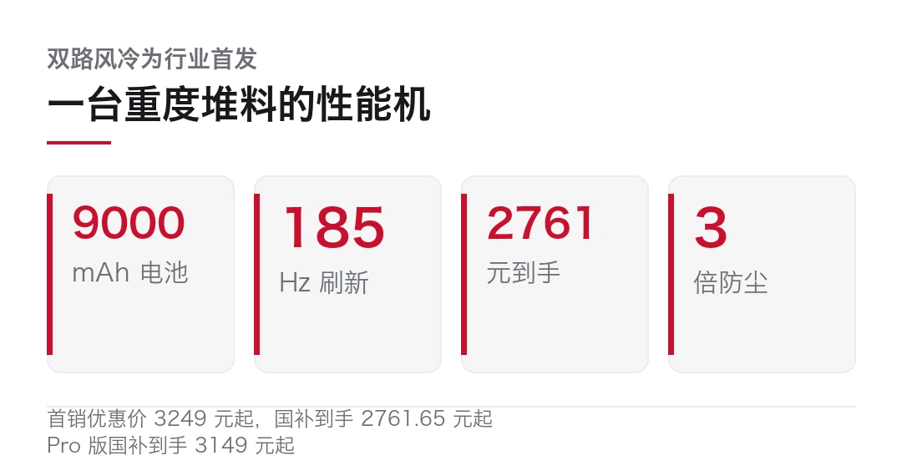
但电池大了，热就更难处理。所以它配了双路冰河风冷。名字听着像营销词，实际是两套独立的散热通路，把 SoC 和充电模块产生的热量分开引导。
它在解决的其实是一个物理问题，热量得搬出去。
机身用金属中框加黄金大 R 角，防护做到 IP66、IP68、IP69 和 IP69K 四项全过。最后那个 IP69K 针对的是高压高温水柱冲洗，一般只在工业设备上见到。
这些规格加起来说明一件事：这台机器是按「重度使用、环境恶劣」设计的。
而这个价位，在当下的手机市场里正好卡在中端性能机的腹地。
一枚戒指，把监测点搬到了指尖
同一天还有个小东西，比手机更有意思。
ISHO Ring 和 ISHO Ring Pro 发布，1799 元和 2199 元，全钛金属机身，支持百级防水，11 月 11 日起发货。Pro 版带一个透明充电盒。
它做的事是把睡眠监测的触点从手腕移到手指。
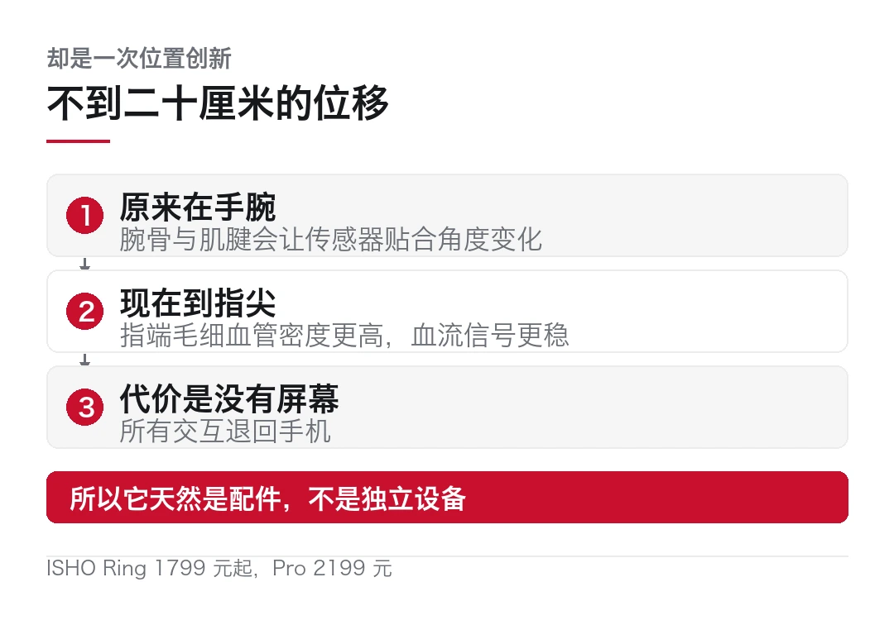
为什么非得是手指？因为指端的毛细血管密度高，血流信号比腕部稳定。手腕上有腕骨、有肌腱，传感器贴合角度一变，数据就飘。指尖没这个问题。
从手腕到指尖，隔了不到二十厘米，但它是可穿戴设备这些年少见的「位置创新」。
手环和手表这条路已经很挤了。从两百元的入门手环到几千元的智能表，功能高度重叠，价格带却拉得很开。戒指是绕开这个战场，去占一根没人占的手指。
代价是屏幕没了。一枚戒指显示不了任何东西，所有交互都得靠手机。所以它天然是配件，不是独立设备。
这也解释了定价逻辑。1799 元买的是「不用戴表也能测睡眠」这个场景。
一边堆料，一边缩量
现在把两件事放在一起看。
Omdia 的数据是这么分的。三季度全球 2.547 亿部，同比降 20%。
三星 5780 万台，降 5%，靠入门和中端的 Galaxy A 系列撑住，加上 8 月的 Galaxy Z8 系列守高端。苹果 5650 万台，持平，中国和北美需求抵消了新兴市场的疲软。
国产这边不好看。小米 3070 万台降 29%，中国降 20%、印度降 28%。OPPO 含 realme 和一加 2340 万台降 39%，是前五里跌得最狠的。vivo 1930 万台降 33%。
区域上，非洲降 39%，亚太（不含大中华区）、中东、拉美都降超 20%。
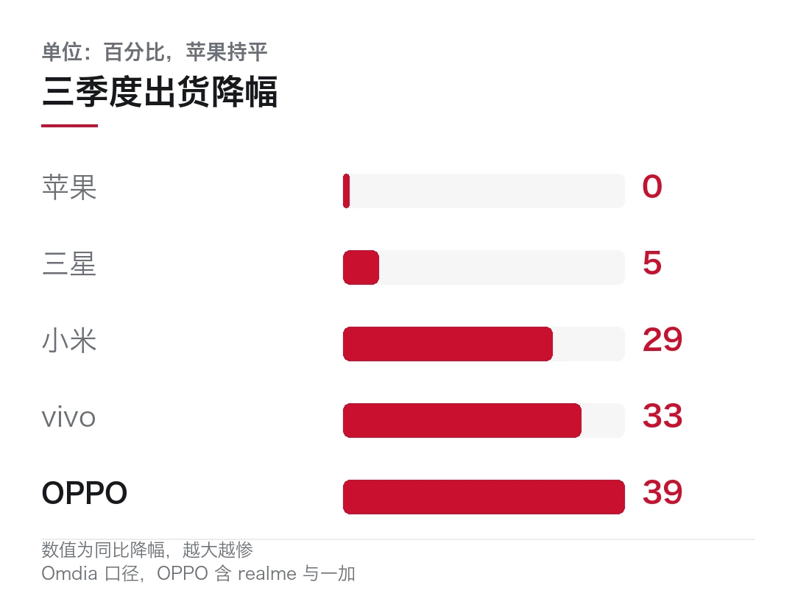
三星和苹果加起来，扛住了全球近一半的出货。
原因 Omdia 说得很直接，涨价抑制了换机需求，渠道因为设备成本和资金占用上升，不敢压货。
于是出现一个反直觉的局面。大盘在缩，单机在涨。
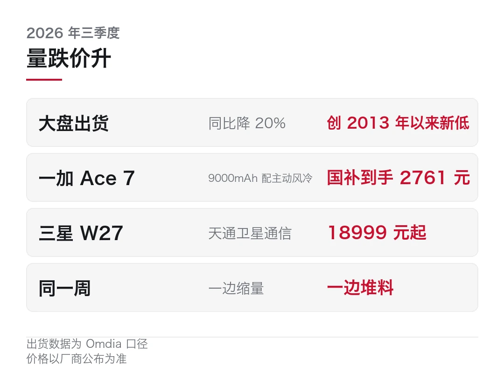
一加把 9000mAh 和 IP69K 塞进两千七的机器，三星把折叠屏卖到 18999，苹果把触控 Mac 卖到 22999。每一家都在用更高的规格，去守一个更小的盘子。
这不是谁的战略选择，成本推动而已。存储涨价、面板涨价、代工涨价，中低端机型先被挤死，剩下的厂商只能在高端里找利润。
Omdia 的判断是 2026 全年降 12%，2027 年继续降但降幅收窄。翻译一下，就是还得熬一年。
还有一条数据值得单独拎出来。Omdia 说这一季全球出货 2.547 亿部，而 2013 年的三季度是多少？大约 2.5 亿部。
也就是说，十四年过去，全球手机市场规模原地踏步。中间那些年的增长，主要来自换机频率，不是来自新用户。
现在换机频率掉下来了。一台手机从两年一换变成三年一换，整个市场的年出货量就直接少三分之一。这跟产品好不好没关系，是分母变了。
注意一点，这不是手机行业独有的问题。PC 走过同一条路，2011 年全球出货 3.65 亿台见顶，之后一路降到 2.5 亿台上下，靠疫情才短暂反弹。手机现在的位置，大概相当于 PC 的 2013 年。
那枚戒指为什么现在出现
说回 ISHO Ring。
如果只看手机市场，这个时间点做新硬件是逆势的。但换个角度就顺了。
手机卖不动，是因为换机理由不够。加摄像头、加刷新率、加内存，这些对已经有一台好手机的人来说，不构成换机理由。
配件不一样。配件的购买决策跟换机周期解耦。一台用了两年的手机，配一枚 1799 元的戒指，这个决定比换一台 5000 元的手机容易得多。
所以量缩的时候，厂商会往配件和新形态上走。手环、手表、耳机、眼镜、戒指，都是同一个逻辑。手机是入口，配件是增量。
这条路能不能走通，看两件事。一是戒指的监测精度能不能真的比手表好，而不是只在宣传里好。二是它跟手机的联动够不够顺，如果每天要手动同步一次，用户三天就弃了。
冷判断
这两条新闻放在一起，能看出手机行业现在的真实处境。
规格还在往上走，价格还在往上走，但需求在往下走。厂商能做的，是把每一台机器做得更「值」，同时去找手机之外的第二个入口。
一加选的是把游戏体验做到极致，用散热和电池这种最笨的办法。ISHO 选的是换一个身体部位，去做一个更小的品类。
两条路都不算错，但都不解决根本问题。根本问题是换机周期在变长，而这个趋势不是靠堆料能扭转的。
一台手机能用四年的时候，厂商卖的不是产品，是换机理由。
这两年所有发布会都在找这个理由。折叠、AI、影像、卫星通信、触控，现在轮到散热和戒指了。
真正能让人换机的理由，到现在还没出现。所以 2027 年那个「降幅收窄」，大概率反映的是基数已经够低。需求并没有回来。
Omdia 的出货量与同比数据为第三方机构口径，与厂商自报出货量常有差异。一加 Ace 7 与 ISHO Ring 的规格与售价以厂商发布信息为准，本文未做上手实测。文中所引 Omdia 对 2026、2027 年的预测为机构判断，非既成事实。本文仅作事实转述，不构成任何购买建议。
本文信息来源
- CNMO 科技（经网易）— 早报：最高售价 21999 元，三星 W27 发布，一加 Ace 7 问世（2026-10-30） · dy.163.com
- 科技狐（经网易）— 新品：苹果发触控 MacBook，vivo 启动 OS7 公测（2026-10-30） · dy.163.com
- 网易 — Omdia 发 Q3 详细数据，唯苹果没跌（2026-10-29） · 163.com
- CNMO 科技（经今日头条）— Q3 全球智能手机出货量同比下降 20%，创 2013 年来新低（2026-10-29） · toutiao.com
- IT 时代网（经搜狐）— 全球手机 Q3 出货量创 13 年新低（2026-10-30） · sohu.com
- 快科技（经新浪科技）— Q3 全球智能手机出货量，苹果三星合计占超 50%，中国厂商同比下降 30%（2026-10-30） · tech.sina.cn
- 腾讯新闻 — 早报：三季度全球手机出货量降 20%，创新低（2026-10-30） · news.qq.com
- 腾讯新闻（新华社）— 中国科学家创制新的碳纳米带实现高效电子输运（2026-10-30） · news.qq.com
- 重庆日报 — 一加 Ace 7 系列发布，性能屏幕影像续航等配置升级（2026-10-30） · cqrb.cn
- 羊城晚报（经今日头条）— 一加 Ace 7 系列正式发布，首销国补价 2761.65 元起（2026-10-29） · toutiao.com
04三星 W27 卖 18999，内存缺到 2030
今天的速览，六条。前两条讲的其实是同一件事的两头，麻烦在于它们看着毫不相干。
海外 · 三星 W27 卖到 18999
三星心系天下 W27 发布，基于 Galaxy Z Fold8 Ultra 打造，16GB+512GB 卖 18999 元，16GB+1TB 卖 21999 元。11 月 13 日发货。
机身 215 克，外屏 6.5 英寸、内屏 8.0 英寸 AMOLED，120Hz，峰值亮度 3000 尼特，第五代骁龙 8 至尊版。支持天通卫星通信，开通给一年直连、300 分钟通话和 100 条短信。
外观走的是中式路线，霁霞红与霁湖蓝两款配色取自霁红釉和霁蓝釉，背板用康宁大猩猩玻璃陶瓷 3，相机模组做雾金工艺。
这个价格不用解释，它不是卖给普通用户的。W 系列一直是中国市场的特供高端线，卖的是身份标识，不是性价比。
海外 · 内存缺到 2030，利润率高到 80%
这一条值得细看，因为它解释了上面那台手机为什么敢卖 18999。
SK 海力士这个季度营业利润约 620 亿美元，同比涨 632%，营业利润率 80%。每卖一块钱的内存，八毛是净赚的。
它顺手给了个预告，内存供不应求的局面会持续到 2030 年，2027 和 2028 两年的产能，一大半已经被长约提前锁定。三星在业绩电话会上的口径类似，认为存储紧缺延续到 2028 年。
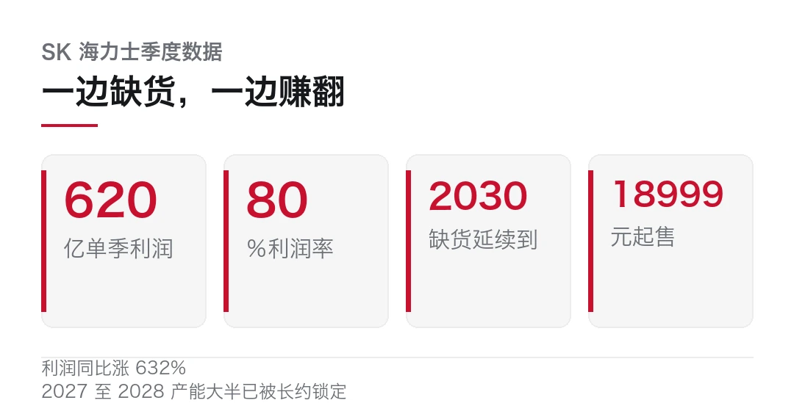
下游的反应很直接。折叠屏 AMOLED 面板今年出货预计到 2900 万片，同比增长 44%，因为折叠屏单价高、能吸收成本。而中低端手机在涨价和缺货的双压下，出货量先崩。
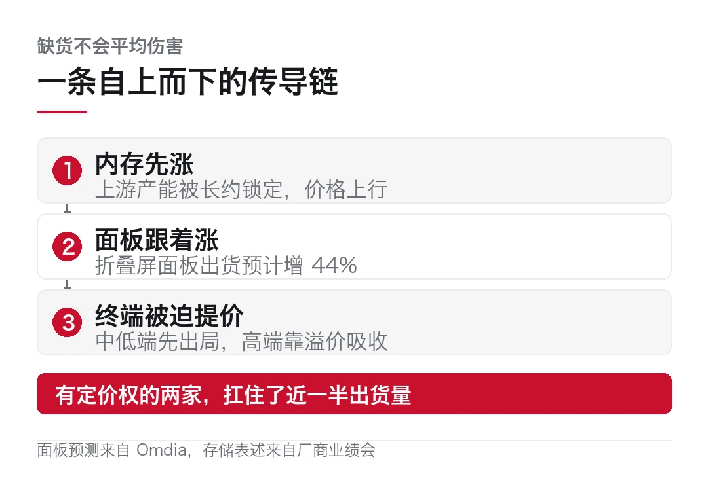
Omdia 那组数据由此就通了。三季度全球手机出货降 20%，创 2013 年以来最低，但三星和苹果两家扛住了近一半的量，因为它们有定价权。
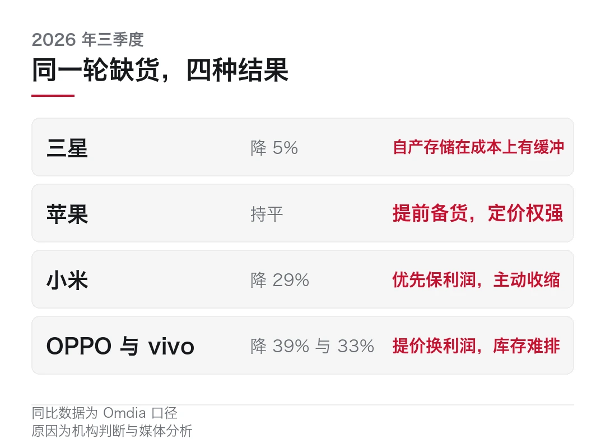
缺货不会让所有人一起难受，它只会让没定价权的那部分人先出局。
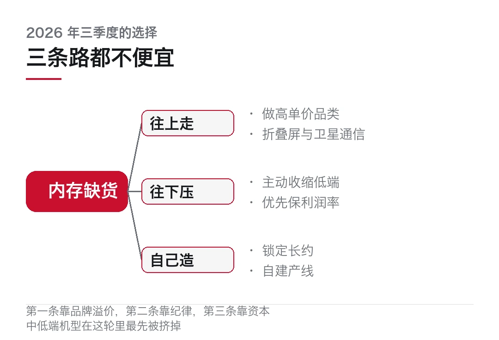
国内 · X7 Ultra，让大模型定义芯片
XHEART 新芯航途 10 月 29 日在苏州发布大模型芯片 X7 Ultra，主打智能驾驶的端到端大模型，算力 700 TOPS。
公司成立于 2023 年，路线叫「让大模型定义芯片」，意思是先从真实量产模型的需求倒推芯片架构，而不是先做通用算力再找场景。
几个具体数字。内存带宽消耗比行业旗舰低 80%，NPU 计算利用率 98.7%，能效提升 100%。用的是中国首发量产的 Armv9 车规级 CPU，激光雷达处理带宽最高 2000 万点每秒，功能安全做到 ASIL-B，内置 MCU 通过 ASIL-D。
量产情况是，X7 系列已量产 8 个月，累计出货超 20 万颗，搭载 10 款量产车型，拿到 40 多款车型订单。首颗芯片回片不到 24 小时点亮，第 17 天跑通芯片、底层软件与智驾模型的整车闭环。
700 TOPS 这个数字本身意义不大，都是纸面算力。值得看的是那个 80%。它承认了一件事，智驾芯片的瓶颈在数据搬运，不在峰值算力。
国内 · 智元开始算「有效智能工时」
智元披露上半年营收近 20 亿元，同时推出一个新指标，叫「有效智能工时」。
这个指标的意思是，不看机器人待机多久，只看它真正在干活的时间。
等于把「在线率」换成了「有用率」。
为什么单拎这条？因为人形机器人这个行业现在最缺的就是统一口径。各家都在报订单、报交付、报演示视频，但没人说得清一台机器一天到底干了多少有用的活。
有了可比的指标，才谈得上比较。
海外 · 美国计算机专业入学人数两年减 18.4%
这条跟 AI 热潮放在一起看有点反直觉。
美国计算机专业本科入学人数连续两年下降，两年累计减少 18.4%。而同期 AI 岗位的需求和薪资都在涨。
可能的原因不少。一是前几年扩招过头，基数本来就虚高。二是入门级岗位被 AI 工具吃掉了一部分，学生对就业前景的判断变谨慎。三是计算机学位不再等于高薪保证，选专业的人开始算回报率。
不管哪个原因，结论都指向同一处。注意一点，这一条跟这期的其他几条都不太一样。这一轮 AI 的基础设施在扩张，但人才培养的管道在收窄。
海外 · ChatGPT Pro 额度上调至两倍
OpenAI 宣布 Pro 100、Pro 200、Pro 500 三个层级以及 Business Premium 的使用限额全部上调至原来的两倍，现有订阅自动生效，不用申请。
这条没什么可分析的，就是竞争压力下的常规动作。别只看那个倍数。值得留一句的是时机，它出现在几家公司密集发布新模型、并且开始打价格战的那一周。
三星 W27 的配置与价格以三星发布信息为准；SK 海力士与三星的财务及产能表述来自其业绩说明，经中文财经媒体转述；Omdia 出货与面板数据为第三方机构口径。X7 Ultra 的六项能力与量产数据为厂商自述，尚无第三方验证。
智元的营收与指标为公司披露；美国计算机专业入学数据来自公开统计的媒体转述，具体口径待核。
ChatGPT Pro 额度调整以 OpenAI 官方说明为准。不构成任何投资建议。
本文信息来源
- CNMO 科技（经网易）— 早报：最高售价 21999 元，三星 W27 发布，一加 Ace 7 问世（2026-10-30） · dy.163.com
- 科技狐（经网易）— 新品：苹果发触控 MacBook，vivo 启动 OS7 公测（2026-10-30） · dy.163.com
- 中证快报（经搜狐）— 10 月 29 日中证投资资讯，含三星存储紧缺至 2028 与折叠屏面板出货预测（2026-10-29） · sohu.com
- 新浪网 — 刚刚，中国首个 AI 定义芯片诞生（2026-10-30） · k.sina.com.cn
- 新浪网 — 闪电快讯：XHEART 发布大模型芯片 X7 Ultra，公布 X9 下一代研发目标（2026-10-30） · k.sina.com.cn
- 腾讯新闻 — 早报：OpenAI 宣布 ChatGPT Pro 全系使用限额上调（2026-10-30） · news.qq.com
- 爱范儿（经网易）— 早报：美国计算机专业入学人数再降，本科两年减少 18.4%（2026-10-30） · 163.com
- 网易 — Omdia 发 Q3 详细数据，唯苹果没跌（2026-10-29） · 163.com
本文首发于公众号「YITENG」。原文：daily.html
留言